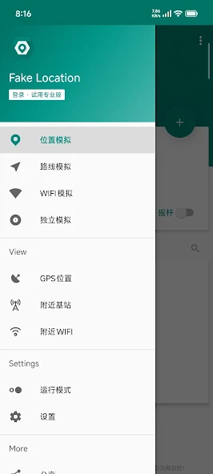
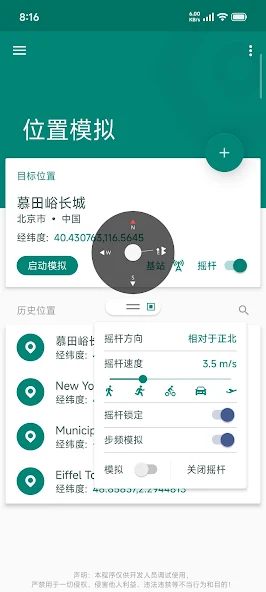

Fake Location 专业版到底值不值得掏钱？一笔一笔给你算
免费版能用什么、专业版解锁什么、不同使用强度的人每小时成本多少——把这笔虚拟定位的账算明白再决定掏不掏。
它到底值不值得掏钱？这个问题我掂量了整整两周。不是买不起那几十块，是怕花了之后发现自己根本用不到那些解锁的功能，纯粹浪费。所以我先去Fake Location官网把免费版和专业版功能边界拆了个底朝天，又翻了社区里真实用户的使用记录，现在可以给你一份实打实的付费决策账本。
先从最基础的开始：这款软件从下载免费下载就能用，内购专业版解锁高级功能。花钱之前得先搞清楚——免费版到底给了多少，专业版又多了什么。
定价拆解：免费版够不够用
Fake Location 的分界线设计得挺鸡贼，但不得不说挺清晰：改坐标、走两步免费，动起来、装得像要钱。
免费版能用的东西其实不少——静态定位改个坐标、摇杆手动推一推、精度频率这些基本参数都不锁。如果你的需求只是"把位置改到北京发个朋友圈"或者"看看上海外卖多少钱"，免费版完全够。我身边有个做前端的朋友，偶尔用免费版改个坐标测试自己写的地理围栏弹窗能不能触发，半年了没花过一分钱。
专业版解锁的功能分两块。免 ROOT 通道的付费项包括：路线模拟（沿画好的线自动走）、摇杆调速（推杆速度可调）、模拟海拔、多级速度档位（步行跑步骑车驾车飞机自选一）、采集位置信息。这些功能不需要手机 ROOT，装个专业版就能用。
ROOT 模式整档是专业版的核心卖点，解锁之后能系统级模拟 GPS、基站位置、WiFi 环境、GPS 信号、步频、独立模拟（只对指定应用生效），还有 SIM 卡状态模拟和反检测 Root 隐藏这三件套。但这档有个硬门槛：不仅要专业版，还得手机能 ROOT，SELinux 还要宽容模式，三个条件缺一不可。

算账：三类用户的单位时间成本
不说空的，按真实使用强度算。
轻度用户：一个月打开三四次，每次改个静态坐标发发定位、看看别的城市的数据。这类人免费版完全够用，一分钱不用花。就算偶尔想试试路线模拟那种"让位置自己动"的效果，用付费版的试用期体验一下就行，不值得长期花钱。算一笔账：专业版哪怕按最便宜的月卡算，摊到每个使用小时可能要几十块——你一个月才用两小时，这单位时间成本比请个顾问还贵。
主力用户：每周用个三五次，每次半小时到一小时。典型场景是应用开发者测试、做地图功能的调试、或者需要经常改位置查不同区域的数据。这类人要区分两种情况：如果你的测试需求只是"把坐标改到某点看应用反应"，免费版的静态定位和摇杆依然能覆盖；但如果你需要模拟移动过程——比如测试"人从 A 点走到 B 点的过程中应用怎么响应"、"路线重算逻辑对不对"——路线模拟、多级速度这些专业版功能（参数怎么配去Fake Location文档翻）就是刚需。按每周 3 小时算，月卡的话每小时成本大概两三块钱，比咖啡便宜。这钱花得值不值，就看你的项目里"不用模拟移动、手动推摇杆"的工作量有多大。
重度用户：几乎每天都用，而且必须 ROOT 模式。典型是需要对抗混合定位的场景——应用不只看 GPS，还扫周围基站、WiFi 信号一起判断位置。这种情况下免 ROOT 模式的专业版功能再全也没用，因为混合定位会读回真实的基站和 WiFi。重度用户必须是专业版 + ROOT + SELinux 宽容三件套全齐。这类人每小时成本最低——每天用一小时，月卡摊下来每小时不到一块钱。但问题是：你真的需要 ROOT 模式吗？华为 EMUI 和三星部分机型内核限制，ROOT 模式直接报错，付费前得先确认硬件条件。

替代方案：不付这笔钱有什么路
说实话，免费替代方案不是没有，但各有各的问题。
最接近的是同类免费虚拟定位工具——市面上确实有几款完全免费的，有的甚至带路线模拟功能。但它们普遍有两个硬伤：一是更新慢，Android 大版本更新之后兼容性容易出问题；二是反检测能力几乎为零，检测严格的应用一抓一个准。Fake Location 在反检测这块做了多少我不好说，但它至少有专门的 ROOT 模式和反检测三件套，这是免费工具没有的。
另一条路是降低使用频率——把"每周用五次"改成"攒到一起每月用一次"，用付费版的试用期或者单次付费机会集中处理。缺点就是不方便，而且有些必须每天操作的场景根本攒不了。
还有个办法是找同行拼车——几个人共享一个专业版账号，分摊费用。我没试过但社区有人这么干过。不过软件厂家肯定不允许这种用法，封号风险自己掂量。
结论：哪类人该掏钱
最后给你一个可执行的判断标准，三秒能对号入座。
闭眼付的：开发者/测试人员，项目里需要频繁模拟移动过程（路线、速度、海拔），或者要测混合定位场景必须 ROOT 模式的。专业版能省下来的手动推摇杆的时间，远超过那点订阅费。
再等等的：偶尔想用路线模拟但不急的，或者手机 ROOT 有困难的（华为、三星部分机型先测硬件能不能搞）。先把免费版用透，等真到了"没有专业版功能就做不了事"的那一刻再掏也不迟。另外官方有屏蔽名单——打卡、配送、网约车、校园跑这类应用本来就不会生效，别信什么"增强设置能绕过"的说法，那是浪费钱。
永远不用付的：只是偶尔改个静态坐标发定位、看看别的城市数据的。免费版完全够用，花这个钱就是交智商税。
这套资料在三个仓库都能拿到，我顺手存了一份方便国内朋友访问，GitHub 是主仓库，Gitee 和 GitCode 各备了一份镜像。